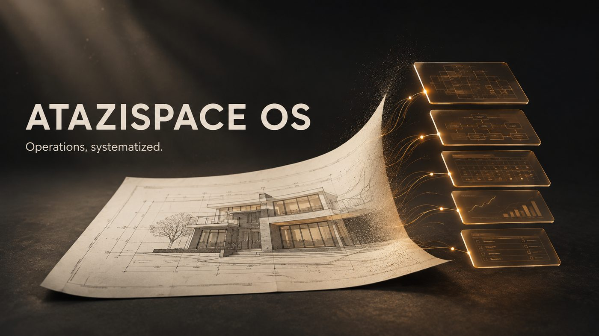

Operations, systematized: a lean digital-operations system for a hypothetical design-and-build studio — five linked Notion databases, two automations, an AI prompt library, and two SOPs. Dummy data, no real client, labelled simulation by design.
Year
2026
Role
Systems designer — schema, automations, prompts, SOPs
Platform
Notion (Free plan) · Make · Telegram · Tally
Status
Built as lean MVP — case study + walkthrough video
What it is, and why it's a simulation
AtaziSpace OS is the operating system a small design-and-build company would run on:
leads become clients, clients have projects, projects have tasks and cost budgets
(RAB), and the whole company steers by quarterly OKRs — all connected, all visible in
one Command Center.
It was designed as a labelled simulation: every record is dummy data and no real
company is named, so the design itself is what's on trial. The brief was deliberately
lean — an MVP that proves the system works before anyone pays for the full version.
The five databases
Clients — CRM
Source (Instagram, referral, website, ads, WhatsApp), pipeline status Lead → Qualified → Client → Lost, and a rollup of total project value per client.
Projects — delivery
Pipeline from Lead through Survey, Design, RAB, Construction, Handover to Closed. Budget in Rupiah, PIC, dates, and a progress formula computed from task completion.
Tasks — execution
Priorities P0–P2, assignees, due dates, and a days-left formula for triage.
RAB Items — cost plan
Construction budget lines grouped by work category (Persiapan, Pondasi, Struktur, Dinding, Atap, …) with unit, qty × unit price, and line totals rolled up into the project.
OKR — steering
One row per objective: quarter, owner, three key results, target vs current, and an auto progress formula flagged On Track / At Risk / Off Track.
Everything is relational — relations, rollups, and formulas carry the numbers upward,
so the Command Center always reflects the work, not a copy of it.

The system in layers: from lead intake to OKR steering.
The views people actually use
Command Center
Linked views of Projects, Tasks, and OKRs on one page — the morning dashboard.
Projects board
Board by delivery status, plus a table with progress bars.
My Tasks & Overdue
Personal queue (assignee = me, not done) and everything past due.
RAB by project
Cost items grouped by project, then category — the view the principal reads.
Two automations, end to end
Lead intake
A Tally/Google Form submission flows through Make into Notion — client and project created automatically with status Lead — then a Telegram notification lands with the details.
Overdue reminder
A daily Make schedule queries tasks that are due and not done, and pushes the list to Telegram before the day starts.
Both scenarios are documented on an Integrations page: trigger, action, database ID,
workflow screenshots, example payloads, and error handling.
AI prompts — 2 + 1
Brief → Scope
Paste messy client-meeting notes; get goal, scope, exclusions, assumptions, and risks.
Meeting notes → Action items
Returns a table: decision, owner, due date.
Scope → RAB draft (bonus)
From an approved scope, a first-draft cost table: item, qty, unit, estimated price, assumptions.
Each prompt ships with a before/after example so the value is visible, not claimed.
Two SOPs
Lead intake → Survey
Steps, the data to collect, and the SLA before a survey is scheduled.
Weekly ops review
Agenda, the metrics to check, and the action items it must produce.
Both written to one format: purpose, scope, numbered steps, checklist, short FAQ.
The free-plan constraint, engineered around
Notion Free has no Notion AI, limited database automation, and a 5 MB upload cap — so
the design routes around it: AI runs through external assistants with a portable prompt
library, automation runs through Make's free tier (1,000 ops), forms run through
Tally, and the walkthrough lives on video with a link. Constraints documented, not
hidden — the full version (quotation versioning, vendor tracking, key results as a
separate database, role permissions) is scoped and ready if a real company wants it.